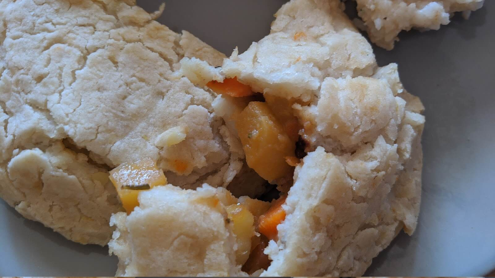

Chemistry in cooking: The nutritional changes caused by cooking
Emily Richter. 8/19/2020

These hand pies are filled with carrot, potato, rutabaga, and onion.
These hand pies are filled with carrot, potato, rutabaga, and onion.
You probably took a chemistry course at some point in your life — maybe it was a six-week introductory unit in eighth grade science, or maybe it was a year-long high school class. It is entirely possible that you have not thought about chemistry since you took that course many years ago, but chemistry applies to your life every day in the simplest way — through cooking. When you cook a meal, you witness chemistry in action.
A recipe starts with ingredients that all have nutritional benefits. But after you cook these raw ingredients, how do these nutritional benefits change? Does a cooked carrot have the same health benefits as a raw carrot? To understand how cooking affects nutrition levels in food, let’s look at the beginning of a recipe for vegetable hand-pies and walk through a couple of examples of nutritional changes.
This recipe calls for four different vegetables (clockwise from upper-left) — carrots, potatoes, rutabagas (potato-like root vegetable), and onions.
This picture includes the ingredients prior to cooking.
Before they can be added to the hand-pies as filling, all of these vegetables need to be precooked. The carrots, potatoes, and rutabagas will be cooked by steam — three minutes in the microwave will serve them well.
Cooked carrots are a popular topic amongst the food bloggers of the internet — some people argue that cooking carrots destroys the nutrients in them, while others argue that cooked carrots are more nutritious than uncooked carrots. According to Scientific American, it turns out both arguments are correct — cooking carrots lowers their Vitamin C levels, but it also elevates their Vitamin A and antioxidant levels.
Cooking potatoes makes them more digestible by changing the types of starches in them from indigestible starches to digestible starches. These changes allow our bodies to obtain energy from the potato.
SFGate reports that the nutrition content of rutabagas changes minimally when the large root vegetable is cooked. Just like carrots, cooked rutabaga has less Vitamin C than raw rutabaga; root vegetables tend to lose Vitamin C when cooked. However, the beneficial fiber, iron, zinc, and vitamin A levels all stay intact through the cooking process.
This picture shows the onions after caramelization.
The onions in this recipe need to be caramelized. Caramelization takes advantage of the complex sugars found in onions. Thanks to the heat provided by the stove, these sugars start to break down in simpler sugars. These simple sugars undergo several other complicated chemical reactions and create large molecules that our tongues recognize as sweet-tasting. Complex sugars provide your body with more lasting energy than simple sugars do, so in the case of caramelization, cooked onions have a lesser nutritional value than raw onions. The USDA reports that both caramelized and raw onions have lots of vitamins and minerals — the caramelization process does not change or damage those.
Almost everything you do to any ingredient in the process of turning it into a meal changes its nutritional value — this quality is not unique to vegetables! In the kitchen, nutrition-altering chemical reactions happen left and right; some reactions destroy nutrients, while others create or increase them. Is cooked food more nutritionally beneficial than uncooked food? That is a case-to-case matter of both careful consideration and personal opinion. While cooking the vegetables in these hand-pies resulted in a loss of complex sugars and Vitamin C, the cooked vegetables still had a diverse range of vitamins, minerals, and energy molecules, including higher levels of Vitamin A and antioxidants.
You can read more about cooking-related nutrition changes and other kitchen chemical reactions in Simon Quellen Field’s book Culinary Reactions.
Cover Photo: (The Oven Light)

Emily is a junior from Maria Carrillo High School in Sonoma County. She loves chemistry and the environmental sciences and plans to be an environmental chemist when she gets older. Through InterSTEM, she hopes to combine her experience in writing with her interest in STEM in order to help others enjoy and understand STEM. In her free time, she likes playing the flute, and baking and cooking.